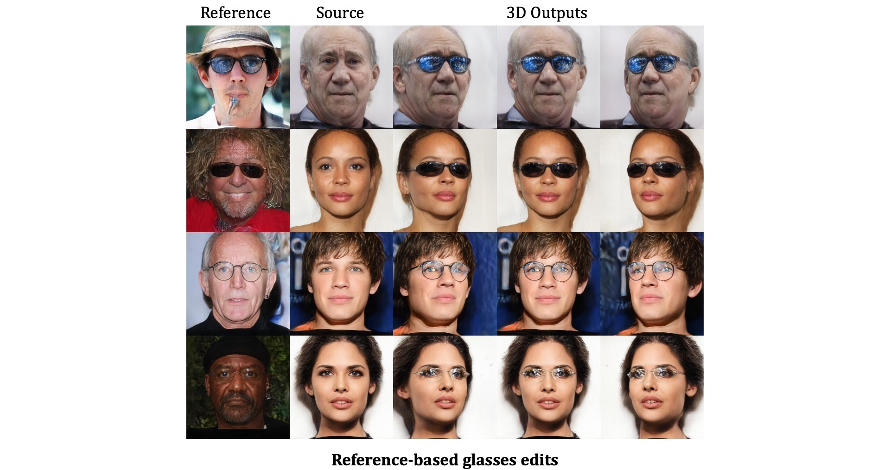

Qualitative Results




Generative Adversarial Networks (GANs) have emerged as powerful tools for high-quality image generation and real image editing by manipulating their latent spaces. Recent advancements in GANs include 3D-aware models such as EG3D, which feature efficient triplane-based architectures capable of reconstructing 3D geometry from single images. However, limited attention has been given to providing an integrated framework for 3D-aware, high-quality, reference-based image editing. This study addresses this gap by exploring and demonstrating the effectiveness of the triplane space for advanced reference-based edits. Our novel approach integrates encoding, automatic localization, spatial disentanglement of triplane features, and fusion learning to achieve the desired edits. Additionally, our framework demonstrates versatility and robustness across various domains, extending its effectiveness to animal face edits, partially stylized edits like cartoon faces, full-body clothing edits, and 360-degree head edits. Our method shows state-of-the-art performance over relevant latent direction, text, and image-guided 2D and 3D-aware diffusion and GAN methods, both qualitatively and quantitatively.
@misc{bilecen2024referencebased,
title={Reference-Based 3D-Aware Image Editing with Triplane},
author={Bahri Batuhan Bilecen and Yigit Yalin and Ning Yu and Aysegul Dundar},
year={2024},
eprint={2404.03632},
archivePrefix={arXiv},
primaryClass={cs.CV}
}